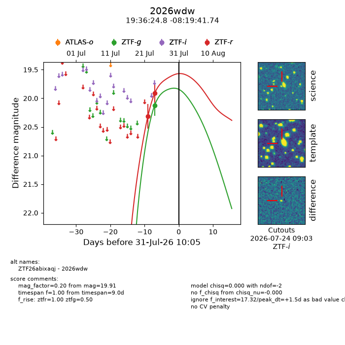
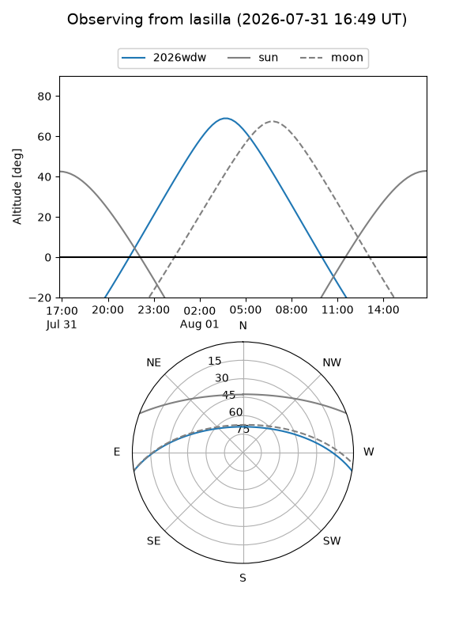
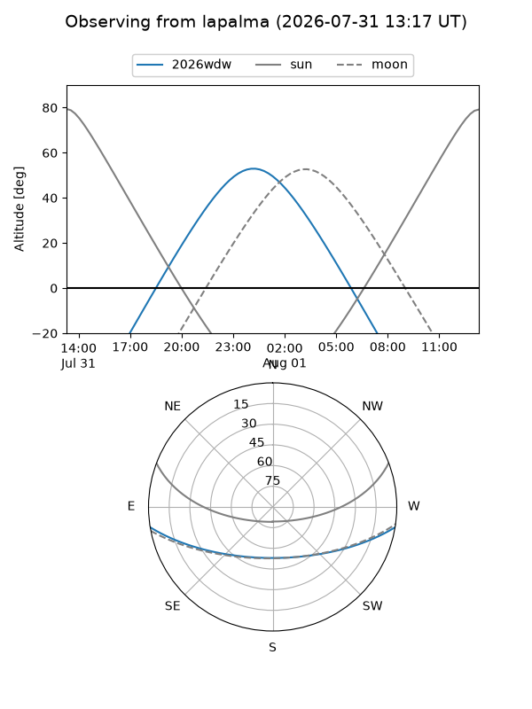
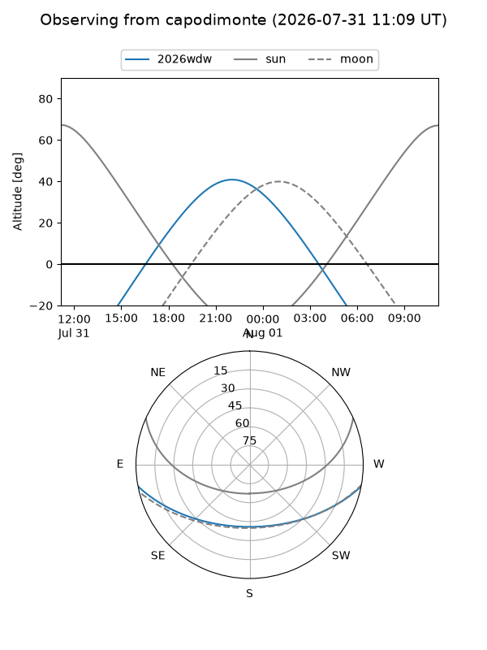
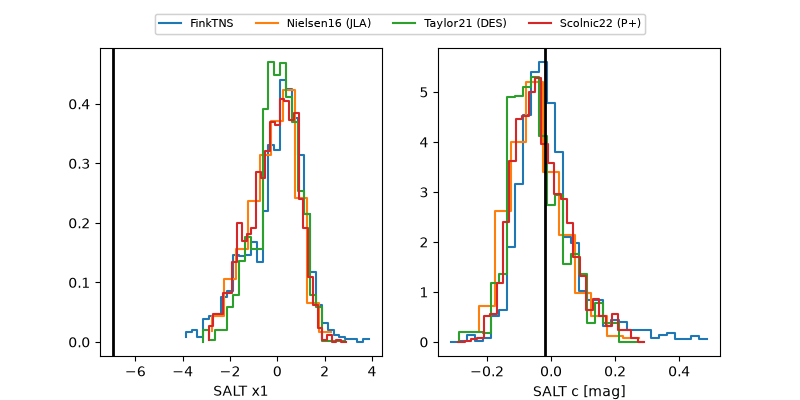

2026wdw
Target 2026wdw at 2026-07-31 21:27
Aliases and brokers:
FINK-ZTF: ztf.fink-portal.org/ZTF26abixaqj
Lasair-ZTF: lasair-ztf.lsst.ac.uk/objects/ZTF26abixaqj
ALeRCE-ZTF: alerce.online/object/ZTF26abixaqj
YSE-PZ: ziggy.ucolick.org/yse/transient_detail/2026wdw
TNS name: wis-tns.org/object/2026wdw
Direct TNS query: direct search
alt names
ZTF26abixaqj (ztf,fink_ztf)
2026wdw (tns,yse)
Coordinates:
equatorial (ra, dec) = 294.1032,-8.32826
equatorial (HMS+DMS) = 19:36:24.76,-08:19:41.74
galactic (l, b) = (30.5164,-13.75371)
Flags:
TNS type: nan
peak dt: +2.0
Photometry:
last ztfg=20.12, ztfr=19.91
1 ztfg, 2 ztfr detections
Lightcurve

Visibility



Additional plots
